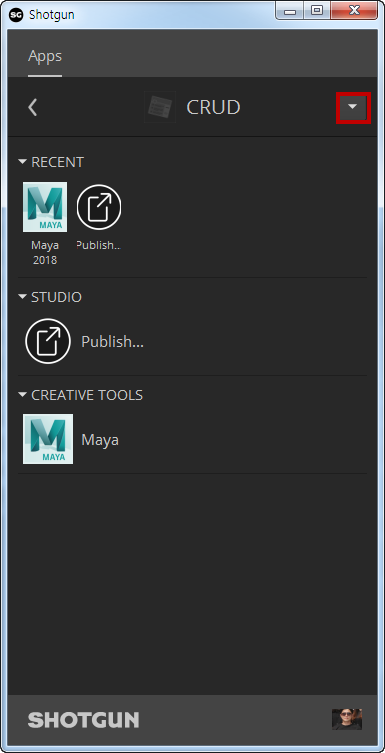
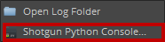
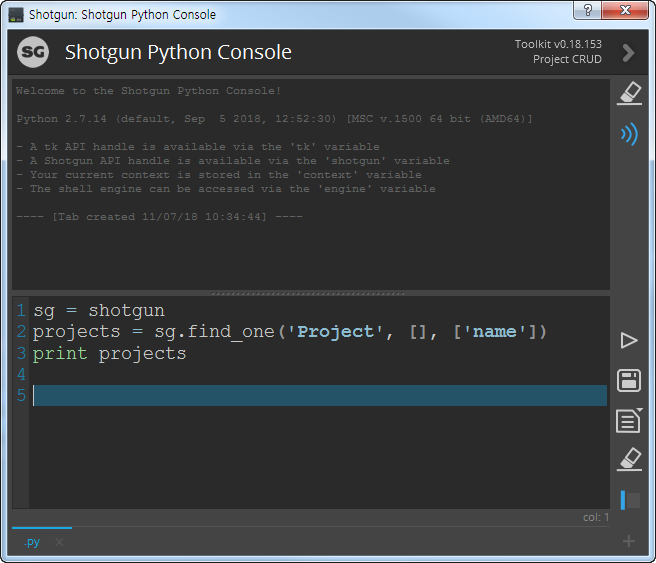
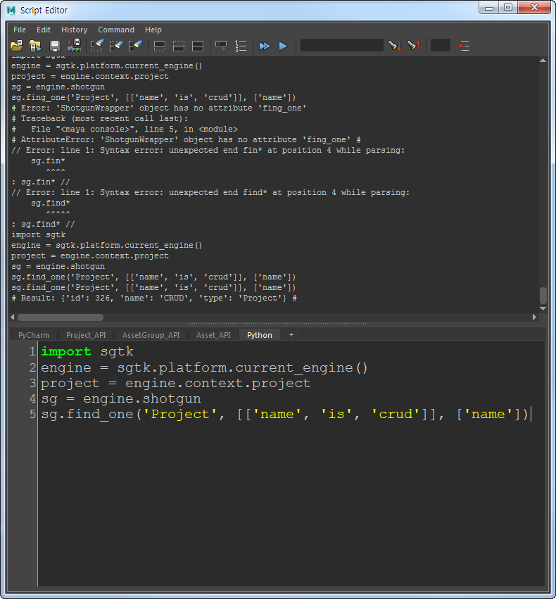
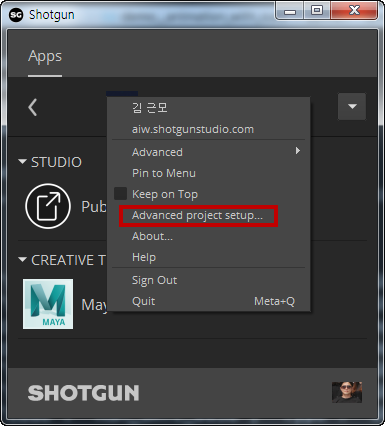
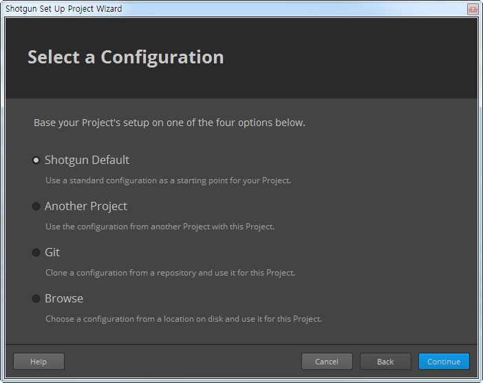
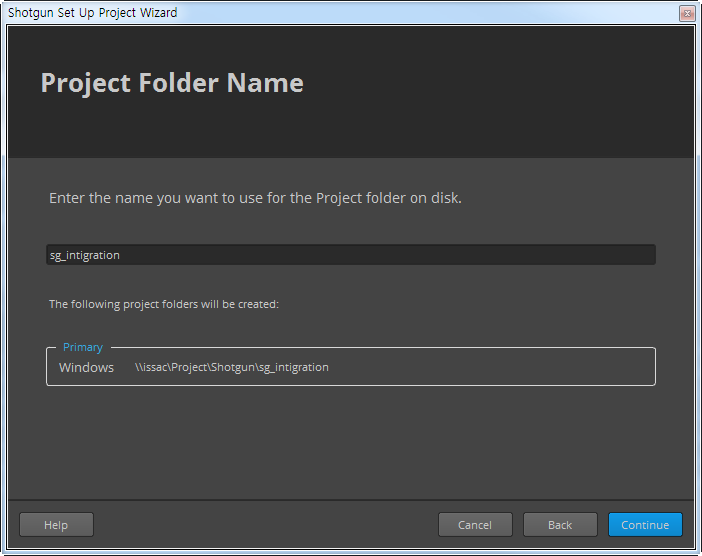
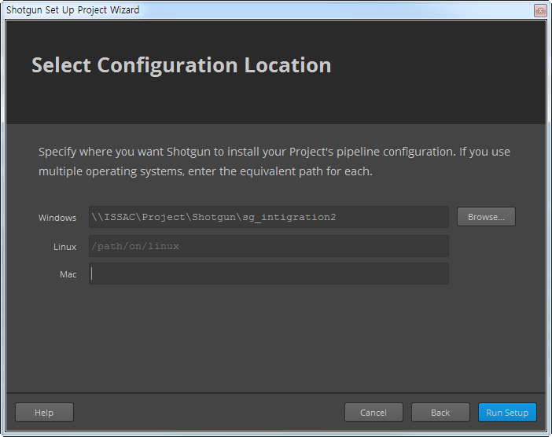
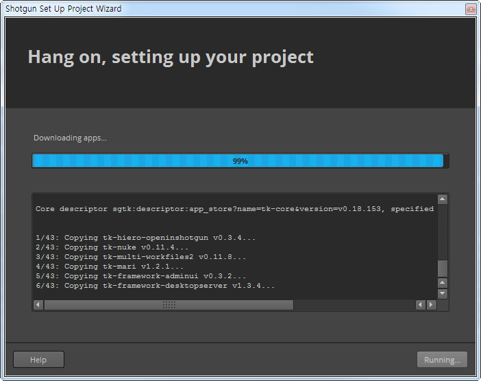
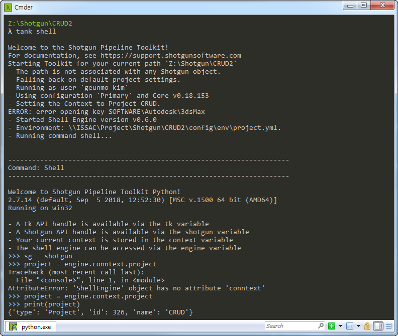

Shotgun API의 기본
개발자가 Shotgun Python API를 통해 Shotgun과 상호 작용할 수 있는 방법은 여러 가지입니다. 무엇보다 중요한 것은 Shotgun용 도구를 학습하거나 빌드하면서 명령을 테스트할 수 있도록 Python 콘솔에서 API에 쉽게 액세스할 수 있어야 한다는 것입니다.
Download from GitHub
https://github.com/shotgunsoftware/python-api
shotgun_api3 폴더를 python에 패스에 포함 시킨다.
import shotgun_api3
sg = shotgun_api3.Shotgun(
'https://aiw.shotgunstudio.com',
logint='user_id',
password='password')
sg.fing_one('Project', [['name', 'is', 'crud']], ['name'])
Clone from GitHub
원하는 폴더로 이동 하고 커맨드 창에서 git clone을 실행 합니다.
git clone https://github.com/shotgunsoftware/python-api.git
Instll with pip & virtualenv
- 폴더를 생성한다.
- 해당 폴더에서
vertualenv실행 한다. 환경 변수 셋팅이 안되어 있을경우는 경로롤 모두 적어준다. - 가상환경을 실행한다.
- pip로 설치 한다. http://developer.shotgunsoftware.com/python-api/
C:\Python27\Scripts\virtualenv venv
.\venv\Scripts\activate
pip install git+git://github.com/shotgunsoftware/python-api.git@v3.0.26
Use tk-multi-pythonconsole



Use the DCC console

import sgtk
engine = sgtk.platform.current.engin()
project = engin.context.project
shots = sg.fine('Shot', [['project', 'is', project]], ['code', 'sg_status_list'])
for shot in shots:
pirnt shot
Use tank shell






만들어지 스토리지 서버로 이동 합니다.
tank shell
